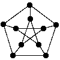

Julius Petersen (1839-1910) was a Danish mathematician. Around 1898 he constructed the graph bearing his name as the smallest counterexample against the claim that a connected bridgeless cubic graph has an edge colouring with three colours.

The Petersen graph is one of the Moore graphs (regular graphs of girth 5 with the largest possible number k2 + 1 of vertices). Two other Moore graphs are known, namely the pentagon (k = 2) and the Hoffman-Singleton graph (k = 7). If there are other Moore graphs, they must have valency 57 and 3250 vertices, but cannot have a transitive group.
The Petersen graph is also a cage (graph with smallest possible number of vertices given its valency and girth).
a) A 4-coclique. There are 5 of these, forming a single orbit. The stabilizer of one is S4, with vertex orbit sizes 4+6. The induced subgraph on the 6 is 3K2.
b) A split into two pentagons. There are 6 of these, forming a single orbit. The stabilizer of one is 5:4, with vertex orbit size 10. There are 12 pentagons, with stabilizer D10.
c) A vertex. There are 10 of these, forming a single orbit. The stabilizer of one is 2×S3, with vertex orbit sizes 1+3+6.
There are 12 pentagons, 10 hexagons, 0 heptagons, 15 octagons 20 nonagons and 0 decagons. The binary code spanned by the cycles is a [15,6,5]-code. The 64 code words are the zero word, the 12+10+15+20 = 57 cycles, and the 6 unions of two disjoint pentagons.
J. Petersen, Sur le théorème de Tait, L'Intermédiaire des Mathématiciens 5 (1898) 225-227.